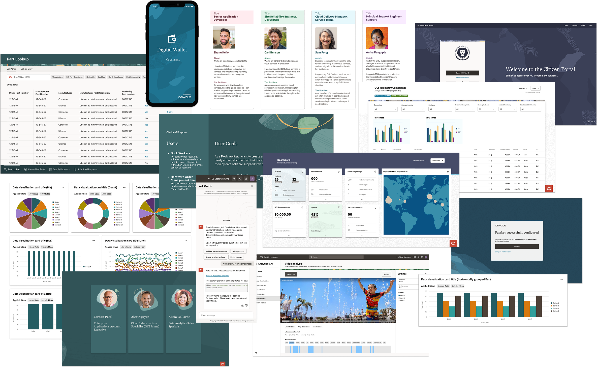

Selected Work
This section highlights a range of projects that show the variety of my work across different products and roles. It includes work where I contributed as a designer as well as projects I led as a Design Manager. Each project clearly outlines my role and responsibilities.
You can view more work on this site in the Design with AI and Use Cases & Process sections, as well as in my earlier work on Behance.
